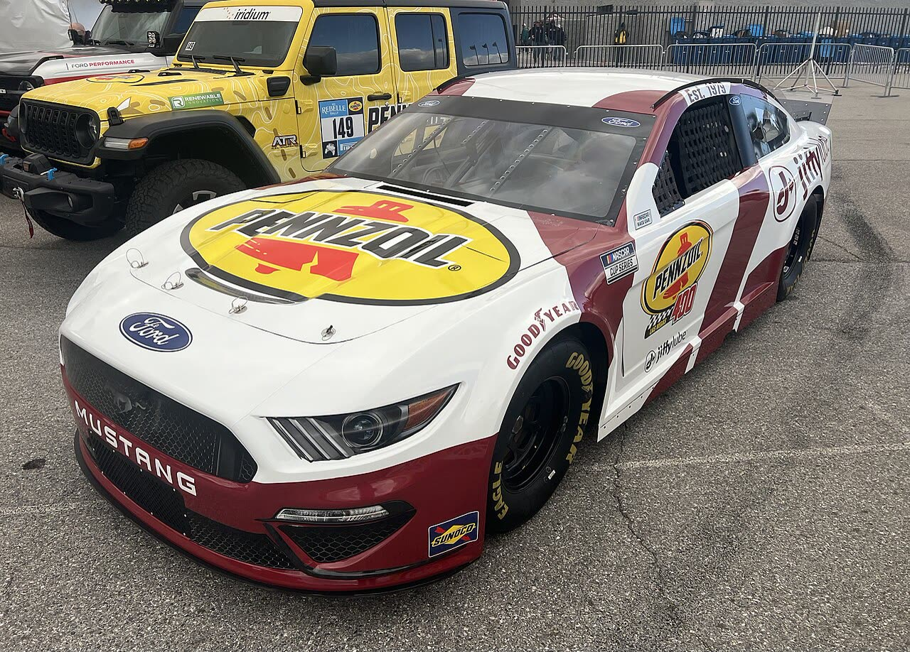

NASCAR ·
Briscoe vence em Charlotte pela segunda vez seguida; Larson lidera o Round of 8

Chase Briscoe venceu a Bank of America 400, em Charlotte, sua segunda vitória seguida na Cup Series, depois de também vencer em Las Vegas. Christopher Bell terminou em segundo e Ryan Blaney em terceiro.
Kyle Larson, que largou na pole e liderou mais voltas, passa a liderar o Round of 8 por 65 pontos sobre Briscoe. Chase Elliott e William Byron foram eliminados do Chase nesta fase.